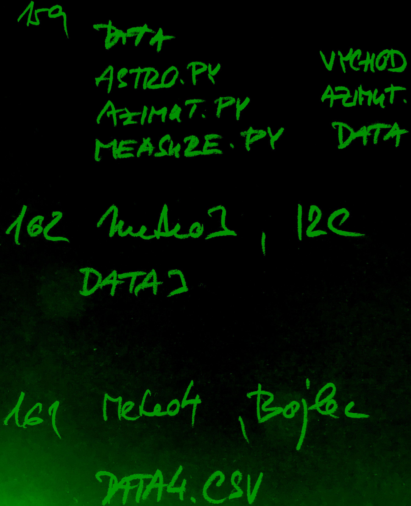

flash
disky
web
samba
stavba-remote
stavba-meteo
stavba-volumio
⚠️status
data.csv
zkouška
calcurse
GitHub a Snapshot
readme
QuickConnect
BARVY
test, kde jsem, rozbliká se led
nano bli
#!/bin/bash
LED=/sys/class/leds/ACT
echo none | sudo tee $LED/trigger >/dev/null
for i in {1..10}; do
echo 1 | sudo tee $LED/brightness >/dev/null
sleep 0.2
echo 0 | sudo tee $LED/brightness >/dev/null
sleep 0.2
done
echo mmc0 | sudo tee $LED/trigger >/dev/null
echo "Jsem na: $(hostname)"
bash bli
stavba flash zero disky a soubory samba web server poznámky
hledání chyby teplota automatické spuštění jako služba poe
antene192.168.1.144 n: pi, p: pavel http://192.168.1.144 ssh
pi@192.168.1.136
meteo ssh honza@192.168.1.101 SYNOLOGY ssh
synology@192.168.1.149 192.168.1.149 PIANO(nahoře) 192.168.1.154
ssh volumio@192.168.1.154 http://piano.local/dev/ #
nastavení/setup volumio remote1 zatím není ssh honza192.168.1.1xx
http://192.168.1.1xx PIONEER(dole) 192.168.1.152 ssh
volumio@192.168.1.152 remote2 192.168.1.151 ssh
honza@192.168.1.151 Cmd + K smb://192.168.1.151/sdilena, jako host
meteo2 ssh honza@192.168.1.106 testunor ssh honza@192.168.1.116
sklep testzero192.168.1.153 označen jako remote1 teplota
vnc://192.168.1.129
finder: Cmd + K připojení ke vzdálenému macu ssh jan matuška@192.168.1.129
156 testunor. 116
157 meteo. 101
158 meteo2 106
159 meteostanice
160
161 meteo4 bojler
162 meteo3 I2C

stavba
flash
zero disky
a soubory
samba
web
server
poznámky
hledání
chyby
teplota
automatické
spuštění jako služba
poe
antene192.168.1.144
n: pi, p: pavel
http://192.168.1.144
ssh pi@192.168.1.136
meteo
SYNOLOGY
ssh synology@192.168.1.149
192.168.1.149
PIANO(nahoře)
192.168.1.154
ssh volumio@192.168.1.154
http://piano.local/dev/
# nastavení/setup volumio
remote1 zatím není
ssh
honza192.168.1.1xx
http://192.168.1.1xx
PIONEER(dole)
192.168.1.152
ssh volumio@192.168.1.152
remote2
192.168.1.151
ssh
honza@192.168.1.151
Cmd +
K smb://192.168.1.151/sdilena, jako host
meteo2
ssh honza@192.168.1.116
sklep
testzero192.168.1.153 označen jako remote1 teplota
vnc://192.168.1.129
finder: Cmd + K připojení ke vzdálenému macu
ssh jan matuška@192.168.1.129